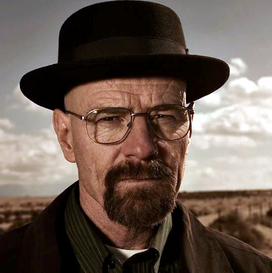

Patrick Bateman
Ještě před odletem jsme věděli, že tento zájezd bude trochu jiný. Cestovní společnost, která nám prodala levnou letenku do Afriky, nám sdělila podmínku: jednorázová letenka a po přistání vám spálíme dům. Bylo to riziko, na které jsme si vsadili, ale v tu chvíli nám to připadalo jako dobře investované peníze.
Po příletu jsme se ubytovali v krásné vile v srdci africké savany. Ale to se změnilo během jediné noci. Probudili jsme se v dýmu a ohni. Náš dům shořel do základů a my jsme zůstali bez všeho. Byli jsme ztraceni v Africe, neměli jsme ani peníze na letenku zpět.
Náš první impulz byl zoufalý - chtěli jsme se dostat pryč, ale nevěděli jsme, jak. Museli jsme se naučit přežít v divočině a hledat zdroje pro přežití. Brzy jsme objevili, že Afrika má své kouzlo, které se nám vtisklo do srdce. Nakonec jsme se rozhodli zůstat.
Snažili jsme se budovat nový domov a najít práci v blízkém městě. Bylo to těžké, ale nakonec jsme si našli nový život v Africe, novou rodinu a nové přátele. Byli jsme nuceni zůstat, ale nakonec jsme si uvědomili, že to byla nejlepší věc, která se nám mohla stát.
Recenze
Je to bizarní a neetická kampaň, ale tato cestovní společnost se rozhodla propagovat své levné letenky do Afriky takovýmto způsobem. Lidé byli zděšeni, když zjistili, že výhodná cena letenek zahrnuje i to, že po přistání jim společnost spálí domov.
Toto nabízení je nejenom nezákonné, ale také zcela nehumánní a bezohledné. Společnost se takto snaží získat zisk za cenu lidského utrpení a ztrát. Mnoho lidí bylo znechuceno touto kampaní a označili ji za skandální a neetickou.
Ti, kteří se rozhodli využít této nabídky, byli překvapeni a zklamáni, když se ocitli bez střechy nad hlavou. Neměli kam jít a neměli možnost získat zpět své věci, protože jim byly všechny spáleny spolu s domem. Byli nuceni čelit velkým finančním a emocionálním ztrátám, což způsobilo mnoho problémů a stresu.
Tato kampaň ukazuje, že některé společnosti jsou ochotny jít velmi daleko v nabídkách levných cestování za cenu lidského utrpení. Je důležité, aby lidé byli opatrní a vybírali si seriózní a etické cestovní společnosti, které jim mohou poskytnout bezpečný a příjemný zážitek z cestování, aniž by museli utrácet za to své zdraví a bezpečnost
 Gypsy Crusader
Gypsy Crusader
Rodina, která si koupila levnou letenku do Afriky, zažila neskutečné dobrodružství. Nejen, že prozkoumali nádhernou krajinu a poznali místní kulturu, ale dokázali překonat i vážný problém.
Když se jim spálil barák, ve kterém žili, museli se vypořádat s těžkou situací. Nicméně, díky svému odhodlání a pozitivnímu přístupu se rozhodli, že se nevzdají a budou hledat řešení. Nakonec se jim podařilo najít útočiště v Africe.
Rodina si zamilovala místní kulturu a okouzlující přírodu. Našli nové přátele a cítili se jako doma. Rozhodli se zůstat v Africe a začít nový život.
Celkově lze říci, že zážitky, které si rodina přivezla z Afriky, jsou nezapomenutelné a zásadní. Dokázali překonat těžkou situaci a najít nový smysl života v naprosto odlišném prostředí. Určitě bychom mohli být inspirováni jejich odvahou a přístupem k životu.
Bing chilling
Jednou se skupina lidí rozhodla pro levný zájezd do Afriky. Byli nadšení, že konečně poznají krásy tohoto kontinentu za výhodnou cenu. Když ale dorazili k ubytování, zjistili, že se jedná o hrozné a nebezpečné místo. Navíc se jim v noci zapálil dům, kterým byli ubytováni, a všichni přišli o všechny své věci.
Bez finančních prostředků a bez domova se skupina lidí ocitla v Africe. Naštěstí ale našli práci a nové přátele, kteří se o ně postarali. I když byli nuceni zůstat v Africe, brzy si zamilovali tamní kulturu a přírodu. Naučili se přežít v divočině a pochopili, že materiální věci nejsou to nejdůležitější. Nakonec zjistili, že tato zkušenost byla neocenitelná a nikdy ji nezapomenou.